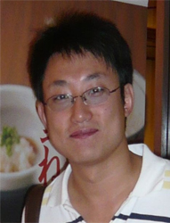

几经磨砺方成器 命虽平凡心不凡
尊敬的各位领导、老师，同学们：
大家好，我是文学院2005级本科生范春斌。说实话，今天站在这个讲台上，心情难免有些矛盾和忐忑不安。因为现在，年轻而且平凡的我还没有总结人生、说教别人的资格；但另一方面，我急切地想要与大家分享的，是二十几年来我站在命运之神眷顾的光环下，在几经磨砺之后对“不平凡”——这个深刻的人生命题——变得越来越厚重的理解。所以今天，我报告题目就是《几经磨砺方成器 命虽平凡心不凡》。对于这个世界来说，每个孩子的出生都是平凡的；可对于父母来说，一个新生命的降临能够使他们的人生变得与众不同。我的父母
大家好，我是文学院2005级本科生范春斌。说实话，今天站在这个讲台上，心情难免有些矛盾和忐忑不安。因为现在，年轻而且平凡的我还没有总结人生、说教别人的资格；但另一方面，我急切地想要与大家分享的，是二十几年来我站在命运之神眷顾的光环下，在几经磨砺之后对“不平凡”——这个深刻的人生命题——变得越来越厚重的理解。所以今天，我报告题目就是《几经磨砺方成器 命虽平凡心不凡》。对于这个世界来说，每个孩子的出生都是平凡的；可对于父母来说，一个新生命的降临能够使他们的人生变得与众不同。我的父母
都是极普通又极朴实的工人，他们勤劳善良，把自己对平凡生命的不平凡希望，全都寄托在了我的身上。因此，我的出生使那时已过而立之年的父母欣喜若狂。作为父母生命的延续，年幼的我将自我价值的实现定义为对父母殷切爱意的回报。所以我一直很懂事、听话，学习也很努力。2001年，我顺利地考入省重点高中——齐齐哈尔市第一中学，年轻的生命正准备去绽放青春的光彩。然而从那以后，在充满无数褒奖和赞誉的环境中，一种前所未有的自负在十六岁的身体里膨胀，我变得高傲、叛逆、浮躁和轻狂。渐渐地，我开始讨厌学习，将师长们善意的教诲与劝导视为耳旁风，终日陶醉于不切实际的幻想，浑浑噩噩，不思进取。终于，命运在我最头脑发热的时候给我泼了一桶冷水，让我彻底清醒——2004年的高考，我落榜了！高考的失利把我从极度的自负拽到极度的自卑，也使我第一次有了正视自己、直面人生的勇气。我终于明白，少不更事的迷惘和轻狂都是不切实际的海市蜃楼，真正的成功要靠脚踏实地的耕耘才能实现，不平凡的梦想只有经过平凡、漫长甚至痛苦的磨砺才能焕发光彩。为了不让自己的青春落空，为了不让自己和“梦想”背道而驰、越走越远，我决定参加第二次的高考。由于过去三年荒废了很多时间，所以许多课程我完全一窍不通，我的“高四”生活也比任何人都更加紧张忙碌，压力更大，心理负担也更重。这一年，我抓住一切可利用的时间，平均每天只睡三、四个小时，将一天掰成三天过，用一年的时间补别人三年的课程。“苦心人，天不负。”2005年，我终于以高出录取线二十几分的好成绩考入东北师范大学文学院——在二十岁的时候，给了自己一个满意的交代。生命的视野在接到录取通知书的那一刻豁然开朗，奋斗的动力也在父母欣慰的目光中更加坚定。我再次对未来充满了希望，我也第一次感觉到，能够对自己负责，那是一种多么“不平凡”的幸福！
同学们，我一直觉得，人这一生能够读一次大学——特别是能够读一所好大学——是一件足以令人一辈子都感到无比幸福的事情。很庆幸，我和你们一样，都已经享受到了这种幸福。因为在这份幸福当中，平凡的我们终于有机会去实现自己不平凡的梦想。等待我们的，不仅是那些足以令我们卓尔不群的学识和修养，更有那听起来就令人怦然心动的锦绣前程。
可能在座的学弟学妹们无法想象我大一时的模样，不知道我的老师和同学们是否还有印象，曾经的范春斌——一张瘦削而棱角分明的脸孔。当我第一次离开故乡和母亲，我看到的是一个多样而充满诱惑的世界。可能许多同学都与我有过或者有着同样的感受，面对各种机会，我们总是不得不在第一时间做出这样或那样的选择，总是希望自己的选择能够是一种更加精彩的人生。因为看到大众传媒在当今社会中的巨大影响力，看到那些著名主持人的名气和财富，所以大一时的我醉心于主持人这项工作，也曾一度迷恋自己的口才和嗓音，甚至以为自己已经找到了一条成功的捷径。随着我在校内外主持晚会及活动的机会越来越多，场面越来越大，我曾一时相信，或许有一天我也会脱颖而出，我也会像朱军或白岩松那样成为著名主持人，甚至比他们更早。到那个时候，我会拥有更多的名气和财富，拥有那些象征着“成功人士”或“社会名流”的物质标志。然而，命运又再次给了我一个深刻的教训——我在一次自认为稳操胜券的主持人比赛中被淘汰了。失败教人沉默，沉默引人沉思。当我默默地看着那些最终突出重围的获奖选手是，我虽不甘心于失败，但却在警醒。我需要反思：自己究竟是在哪里出了问题？出了什么问题？几经思考，我终于找到了答案：大学是什么？大学不是目的或手段，更不应该成为名利场；大学应该是一个过程，是一个充实知识、提高修养，最后达到完美人生境界的大课堂。在大学中，我们应当尽情去享受最美好的纯真年华，而不应被物欲的枷锁捆住手脚。当我用物质去衡量生命的时候，欲望便遮蔽了我眼前的美好；当我用精神去勾陈人生的时候，平凡的生命才会与不平凡的梦想拥有最近的距离。
为了充实和提高自己，也为了让自己的大学生活在服务他人的过程中变得更有意义，我开始积极积极地参加学生工作，并在学生干部的队伍中找到了自己真正的价值。我从班级团支书做起，在每一个生活细节上去关心和关怀那些就生活在我身边、需要帮助的同学，带领大家在思想和学习上一起进步。晚自习时，我在班级中搞“交流会”，让同学们畅谈人生理想和读书心得；周末，我组织全班同学到德惠米沙子村小学支教，把知识带给那些渴望求知的农家子弟；假期里，我们全班到松花湖和拉法山春游，在湖光山色和欢声笑语中增进了解、凝聚友情。在全体同学的支持配合和共同努力下，我们班先后被评为“校重点建设班集体”、“校标兵班集体”，在学校组织的多项大型活动中屡获佳绩。看着同学们露出的一张张笑脸，我感受到的是集体的快乐和自己的满足。平凡的大学生活也因自我价值的实现而变得意义非凡。
由于勤奋和踏实，大一下学期，我被任命为年级长并破格担任院学生会副主席；2007年4月，我当选为文学院学生会主席。新的岗位赋予我新的职责，新的使命正激励我朝着下一个“不平凡”的梦想坚毅前行。为了能够让更多的同学感受到文学以及中国传统文化的魅力，由文学院学生自导自演的莎士比亚经典戏剧《奥赛罗》被搬上舞台、倍受赞誉的中秋灯谜晚会成为文学院学生会送给全校同学的中秋礼物……一项项富有文学院学术特色的精品活动在文学院学生会的集体智慧中诞生，我们尝试着去探索一种“用课内专业知识指导课外文娱活动”的学生活动新思路，既为活跃课外文化氛围服务，也为加强课内专业学习服务。那段时间虽然忙碌而辛苦，但一想到自己这个略微“不凡”的“创举”，心里总有种说不出的快乐。
当我为实现梦想而一点点积累、一点点前进的时候，命运之神也为我倾斜了他幸运的天平——我得到了学校的认可和青睐，有机会到台湾、香港甚至国外去和大学生朋友们交流学习。在台湾和香港，我随时留心比较内地大学生同港台大学生在生活习惯、学习方法、成长模式以及观点看法上的区别，并试着用“同根同祖、求同存异”的观点去理解甚至包容这些差异；在日本，除对中、日、韩文化进行比较研究之外，在尊重历史、平等交往的基础上，努力展现中华民族的大国气概和友好情怀。回到学校后，我对所见所闻进行总结思考，并积极同身边的同学分享异地、异国的见闻感受，目的是帮助更多的同学拓宽视野，共同进步。感恩于学校的培养和命运的垂青，一个平凡的大学生拥有了太多让人羡慕的不平凡经历。而这些经历，必将会成为我实现梦想的路上一笔最为宝贵的财富，必将会为一个年轻而平凡的生命插上飞翔的翅膀。
2008年3月，经过精心准备和层层选拔，我有幸当选为东北师范大学第三十四届学生会主席。就像我在竞选演说中承诺的那样，我一定要努力，一定要让“信任并选择我的人感觉到骄傲”。校学生会是一支历史悠久、底蕴深厚的优秀学生干部队伍，它汇聚了一大批肯吃苦、能战斗并在各个领域内“术业有专攻”的学生骨干和校园精英。带领这样一个团队，可谓“逆水行舟，不进则退。”由于对人员和工作环境都不熟悉，所以刚接手的那段时间，我也曾感到压力很大；而面对忽然更加广阔的全新的平台，我也曾有过迷惘。然而就像是凤凰的涅槃，越是在痛苦的时候越能够孕育出新的希望。任何工作都是人的工作，任何财富都是人的财富。为了能够更好地融入新的集体，我决定抱着学习的态度，先去观察和了解每一个人，和以前并不熟悉的同学先做朋友再做“战友”。终于，在自己的坚持和“战友”们支持下，我度过了陌生的阵痛，第三十四届校学生会——这支新组建的队伍——也顺利地度过了磨合期，我们都以良好的精神面貌和高昂的工作热情投入新的工作，迎接新的挑战。
2008年的上半年对于所有中国人来说都是不平凡的半年，我们共同经历着担忧、愤怒和恐惧；2008年的上半年对于我来说也是最辛苦的半年，在时间紧、任务重、难度大的重压下，我和我的团队艰难却漂亮地打赢了好多次“硬仗”。记得那是在4月份，面对国内外的复杂形势，校内网、论坛、贴吧上充斥着同学们各种各样的声音。那么，怎样引导同学们正确认识当前形势，把握时代主题；怎样更好地保护同学们日益高涨的爱国热情，将这种宝贵精神引导为刻苦学习的实际行动，成为了那一段时间里我们的工作核心。那段时间，我白天走访学院学生会进行调研了解情况，晚上则在办公室通宵加班查阅资料、制定方案，每天忙得不亦乐乎。甚至有时候，我常常因为思考一个关键问题或者开一个重要会议而忘了吃饭，饿肚子反而成了“家常便饭”。经过科学的调研和缜密的部署，我们终于在“五一”期间推出了以“双百论坛——理性爱国系列讲座”为核心，以同学们喜闻乐见的特色文体竞赛为辅助的多项活动，成功地引导同学们将注意力留在了校园里、留在了书本上，帮助大家顺利、平稳地度过了这段“彷徨”期。由于我校工作的突出表现，5月4日，我作为全省高校学生干部代表，向陈晓光副省长做专门汇报，并得到了领导的认可与好评。除此之外，我带领学生会抓住契机，以在汶川地震中为抢救学生而献出宝贵生命的人民教师们的感人事迹为蓝本，策划举办了“师德千秋 大爱无疆”主题诗歌晚会，在全校同学中掀起了一股学习师德师风的新热潮。正所谓“世无艰难，何来人杰。”一个普通大学生的命运，竟因时遇的垂青而与国家和民族的命运产生短暂的勾连，在平凡的生命里下了不平凡的记忆，这不得不说是幸运的。
几年来的学生干部生涯，让我得到了太多锻炼和展示自己的机会，我充实而忙碌地度过了每一天。可是，每当闲暇之时，我不免反问自己：“这样的生活你满意吗？”得到的同时意味着失去。当一个人几乎得到所有人的称赞，他顺理成章地被认为是因成功而笼罩着无数光环的时候，某些东西便改变了它的初衷。我失去的是读书、甚至上课的时间，平时不是上学而是上班，我更像是职员而不是学生。我总是找各种各样缺课的借口并认为这是理所当然。我有些茫然。随着我思维的慢慢成熟以及阅历的逐渐丰富，越来越觉得鲁迅先生在《野草题辞》中讲到的话是正确的。他说“当我沉默的时候，我觉得充实。”而学习和阅读，正是令人在喧嚣与浮华中学会沉默与充实的利器。因此，在紧张忙碌的工作之余，我抓紧一切时间温习功课、夯实专业知识。除此之外，我也坚持不间断地阅读各类书籍，努力提高自己的综合素养。由于坚持学习、坚持阅读、坚持不间断地提升自己，我不仅专业成绩优异，而且还被同学们评价为“有内涵的人”。现在，我已经被直保我校研究生，争取进一步深造。平凡的年轻人因读书学会了思考，也因思考而使自己的生命变得与众不同。
经常有人会问：什么是“理想”？我觉得，理想就是在平凡的生命里为创造不平凡的价值而努力奋斗的目标。也经常有人会问：怎样能“成才”？我觉得，成才就是在面临无数痛苦和艰辛后，依然不改初衷而脚踏实地毅然前行的过程。当我们为执着于“理想”而不懈追求的时候，“成才”或许只是附加品；而当我们实现了“理想”之后，蓦然回首竟发现，“成才”其实已经水到渠成。
同学们，《大学》一书为我们提出了“止于至善”的做人标准。如果我们将自己比作璞玉的话，那么只有在历经磨砺之后，我们才能无限地接近完美，最终成为治学甚至经国的大器。我愿意将此话与大家共勉，让我们年轻而平凡的生命绽放出不平凡理想的耀眼光辉！
谢谢大家！
同学们，我一直觉得，人这一生能够读一次大学——特别是能够读一所好大学——是一件足以令人一辈子都感到无比幸福的事情。很庆幸，我和你们一样，都已经享受到了这种幸福。因为在这份幸福当中，平凡的我们终于有机会去实现自己不平凡的梦想。等待我们的，不仅是那些足以令我们卓尔不群的学识和修养，更有那听起来就令人怦然心动的锦绣前程。
可能在座的学弟学妹们无法想象我大一时的模样，不知道我的老师和同学们是否还有印象，曾经的范春斌——一张瘦削而棱角分明的脸孔。当我第一次离开故乡和母亲，我看到的是一个多样而充满诱惑的世界。可能许多同学都与我有过或者有着同样的感受，面对各种机会，我们总是不得不在第一时间做出这样或那样的选择，总是希望自己的选择能够是一种更加精彩的人生。因为看到大众传媒在当今社会中的巨大影响力，看到那些著名主持人的名气和财富，所以大一时的我醉心于主持人这项工作，也曾一度迷恋自己的口才和嗓音，甚至以为自己已经找到了一条成功的捷径。随着我在校内外主持晚会及活动的机会越来越多，场面越来越大，我曾一时相信，或许有一天我也会脱颖而出，我也会像朱军或白岩松那样成为著名主持人，甚至比他们更早。到那个时候，我会拥有更多的名气和财富，拥有那些象征着“成功人士”或“社会名流”的物质标志。然而，命运又再次给了我一个深刻的教训——我在一次自认为稳操胜券的主持人比赛中被淘汰了。失败教人沉默，沉默引人沉思。当我默默地看着那些最终突出重围的获奖选手是，我虽不甘心于失败，但却在警醒。我需要反思：自己究竟是在哪里出了问题？出了什么问题？几经思考，我终于找到了答案：大学是什么？大学不是目的或手段，更不应该成为名利场；大学应该是一个过程，是一个充实知识、提高修养，最后达到完美人生境界的大课堂。在大学中，我们应当尽情去享受最美好的纯真年华，而不应被物欲的枷锁捆住手脚。当我用物质去衡量生命的时候，欲望便遮蔽了我眼前的美好；当我用精神去勾陈人生的时候，平凡的生命才会与不平凡的梦想拥有最近的距离。
为了充实和提高自己，也为了让自己的大学生活在服务他人的过程中变得更有意义，我开始积极积极地参加学生工作，并在学生干部的队伍中找到了自己真正的价值。我从班级团支书做起，在每一个生活细节上去关心和关怀那些就生活在我身边、需要帮助的同学，带领大家在思想和学习上一起进步。晚自习时，我在班级中搞“交流会”，让同学们畅谈人生理想和读书心得；周末，我组织全班同学到德惠米沙子村小学支教，把知识带给那些渴望求知的农家子弟；假期里，我们全班到松花湖和拉法山春游，在湖光山色和欢声笑语中增进了解、凝聚友情。在全体同学的支持配合和共同努力下，我们班先后被评为“校重点建设班集体”、“校标兵班集体”，在学校组织的多项大型活动中屡获佳绩。看着同学们露出的一张张笑脸，我感受到的是集体的快乐和自己的满足。平凡的大学生活也因自我价值的实现而变得意义非凡。
由于勤奋和踏实，大一下学期，我被任命为年级长并破格担任院学生会副主席；2007年4月，我当选为文学院学生会主席。新的岗位赋予我新的职责，新的使命正激励我朝着下一个“不平凡”的梦想坚毅前行。为了能够让更多的同学感受到文学以及中国传统文化的魅力，由文学院学生自导自演的莎士比亚经典戏剧《奥赛罗》被搬上舞台、倍受赞誉的中秋灯谜晚会成为文学院学生会送给全校同学的中秋礼物……一项项富有文学院学术特色的精品活动在文学院学生会的集体智慧中诞生，我们尝试着去探索一种“用课内专业知识指导课外文娱活动”的学生活动新思路，既为活跃课外文化氛围服务，也为加强课内专业学习服务。那段时间虽然忙碌而辛苦，但一想到自己这个略微“不凡”的“创举”，心里总有种说不出的快乐。
当我为实现梦想而一点点积累、一点点前进的时候，命运之神也为我倾斜了他幸运的天平——我得到了学校的认可和青睐，有机会到台湾、香港甚至国外去和大学生朋友们交流学习。在台湾和香港，我随时留心比较内地大学生同港台大学生在生活习惯、学习方法、成长模式以及观点看法上的区别，并试着用“同根同祖、求同存异”的观点去理解甚至包容这些差异；在日本，除对中、日、韩文化进行比较研究之外，在尊重历史、平等交往的基础上，努力展现中华民族的大国气概和友好情怀。回到学校后，我对所见所闻进行总结思考，并积极同身边的同学分享异地、异国的见闻感受，目的是帮助更多的同学拓宽视野，共同进步。感恩于学校的培养和命运的垂青，一个平凡的大学生拥有了太多让人羡慕的不平凡经历。而这些经历，必将会成为我实现梦想的路上一笔最为宝贵的财富，必将会为一个年轻而平凡的生命插上飞翔的翅膀。
2008年3月，经过精心准备和层层选拔，我有幸当选为东北师范大学第三十四届学生会主席。就像我在竞选演说中承诺的那样，我一定要努力，一定要让“信任并选择我的人感觉到骄傲”。校学生会是一支历史悠久、底蕴深厚的优秀学生干部队伍，它汇聚了一大批肯吃苦、能战斗并在各个领域内“术业有专攻”的学生骨干和校园精英。带领这样一个团队，可谓“逆水行舟，不进则退。”由于对人员和工作环境都不熟悉，所以刚接手的那段时间，我也曾感到压力很大；而面对忽然更加广阔的全新的平台，我也曾有过迷惘。然而就像是凤凰的涅槃，越是在痛苦的时候越能够孕育出新的希望。任何工作都是人的工作，任何财富都是人的财富。为了能够更好地融入新的集体，我决定抱着学习的态度，先去观察和了解每一个人，和以前并不熟悉的同学先做朋友再做“战友”。终于，在自己的坚持和“战友”们支持下，我度过了陌生的阵痛，第三十四届校学生会——这支新组建的队伍——也顺利地度过了磨合期，我们都以良好的精神面貌和高昂的工作热情投入新的工作，迎接新的挑战。
2008年的上半年对于所有中国人来说都是不平凡的半年，我们共同经历着担忧、愤怒和恐惧；2008年的上半年对于我来说也是最辛苦的半年，在时间紧、任务重、难度大的重压下，我和我的团队艰难却漂亮地打赢了好多次“硬仗”。记得那是在4月份，面对国内外的复杂形势，校内网、论坛、贴吧上充斥着同学们各种各样的声音。那么，怎样引导同学们正确认识当前形势，把握时代主题；怎样更好地保护同学们日益高涨的爱国热情，将这种宝贵精神引导为刻苦学习的实际行动，成为了那一段时间里我们的工作核心。那段时间，我白天走访学院学生会进行调研了解情况，晚上则在办公室通宵加班查阅资料、制定方案，每天忙得不亦乐乎。甚至有时候，我常常因为思考一个关键问题或者开一个重要会议而忘了吃饭，饿肚子反而成了“家常便饭”。经过科学的调研和缜密的部署，我们终于在“五一”期间推出了以“双百论坛——理性爱国系列讲座”为核心，以同学们喜闻乐见的特色文体竞赛为辅助的多项活动，成功地引导同学们将注意力留在了校园里、留在了书本上，帮助大家顺利、平稳地度过了这段“彷徨”期。由于我校工作的突出表现，5月4日，我作为全省高校学生干部代表，向陈晓光副省长做专门汇报，并得到了领导的认可与好评。除此之外，我带领学生会抓住契机，以在汶川地震中为抢救学生而献出宝贵生命的人民教师们的感人事迹为蓝本，策划举办了“师德千秋 大爱无疆”主题诗歌晚会，在全校同学中掀起了一股学习师德师风的新热潮。正所谓“世无艰难，何来人杰。”一个普通大学生的命运，竟因时遇的垂青而与国家和民族的命运产生短暂的勾连，在平凡的生命里下了不平凡的记忆，这不得不说是幸运的。
几年来的学生干部生涯，让我得到了太多锻炼和展示自己的机会，我充实而忙碌地度过了每一天。可是，每当闲暇之时，我不免反问自己：“这样的生活你满意吗？”得到的同时意味着失去。当一个人几乎得到所有人的称赞，他顺理成章地被认为是因成功而笼罩着无数光环的时候，某些东西便改变了它的初衷。我失去的是读书、甚至上课的时间，平时不是上学而是上班，我更像是职员而不是学生。我总是找各种各样缺课的借口并认为这是理所当然。我有些茫然。随着我思维的慢慢成熟以及阅历的逐渐丰富，越来越觉得鲁迅先生在《野草题辞》中讲到的话是正确的。他说“当我沉默的时候，我觉得充实。”而学习和阅读，正是令人在喧嚣与浮华中学会沉默与充实的利器。因此，在紧张忙碌的工作之余，我抓紧一切时间温习功课、夯实专业知识。除此之外，我也坚持不间断地阅读各类书籍，努力提高自己的综合素养。由于坚持学习、坚持阅读、坚持不间断地提升自己，我不仅专业成绩优异，而且还被同学们评价为“有内涵的人”。现在，我已经被直保我校研究生，争取进一步深造。平凡的年轻人因读书学会了思考，也因思考而使自己的生命变得与众不同。
经常有人会问：什么是“理想”？我觉得，理想就是在平凡的生命里为创造不平凡的价值而努力奋斗的目标。也经常有人会问：怎样能“成才”？我觉得，成才就是在面临无数痛苦和艰辛后，依然不改初衷而脚踏实地毅然前行的过程。当我们为执着于“理想”而不懈追求的时候，“成才”或许只是附加品；而当我们实现了“理想”之后，蓦然回首竟发现，“成才”其实已经水到渠成。
同学们，《大学》一书为我们提出了“止于至善”的做人标准。如果我们将自己比作璞玉的话，那么只有在历经磨砺之后，我们才能无限地接近完美，最终成为治学甚至经国的大器。我愿意将此话与大家共勉，让我们年轻而平凡的生命绽放出不平凡理想的耀眼光辉！
谢谢大家！